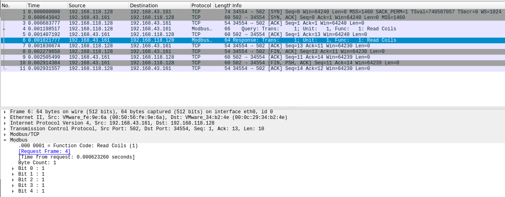
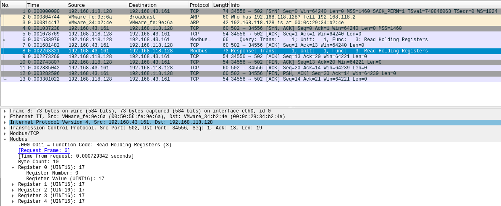
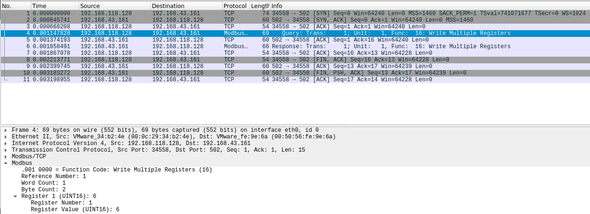
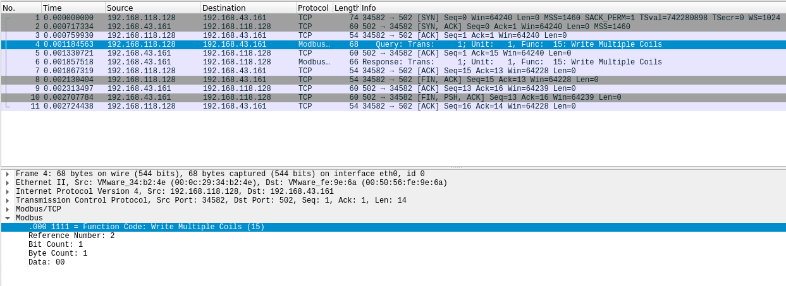
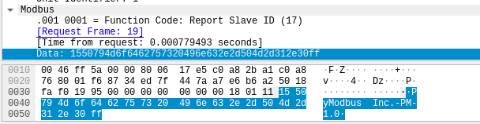
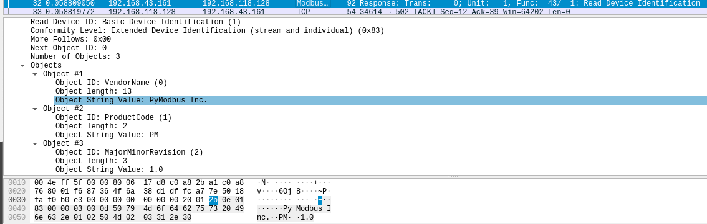
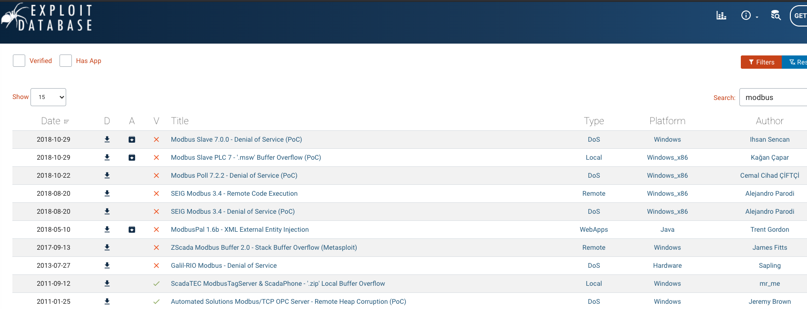

Exercices modbus
Julien Faou
Installation modbus
sudo pip3 install pyModbus
Exercice 1 - Compromission avec modbus-cli
sudo modbus read -h
Usage:
modbus read [OPTIONS] HOST ADDRESS COUNT
Parameters:
HOST IP address or hostname for the Modbus device
ADDRESS Start address (eg %M100, %MW100, 101, 400101)
COUNT number of data to read
Options:
-w, --word use unsigned 16 bit integers
-i, --int use signed 16 bit integers
-d, --dword use unsigned 32 bit integers
-f, --float use signed 32 bit floating point values
--modicon use Modicon addressing (eg. coil: 101, word: 400001)
--schneider use Schneider addressing (eg. coil: %M100, word: %MW0, float: %MF0, dword: %MD0)
-s, --slave ID use slave id ID (default: 1)
-p, --port PORT use TCP port (default: 502)
-o, --output FILE write results to file FILE
-D, --debug show debug messages
-T, --timeout TIMEOUT Specify the timeout in seconds when talking to the slave
-C, --connect-timeout TIMEOUT Specify the timeout in seconds when connecting to TCP socket
-h, --help print help
A l’aide de la commande modbus read, lisez les 5 premiers registres de type bit
sudo modbus 192.168.43.161 1 5
1 1
2 1
3 1
4 1
5 1

A l’aide de la commande modbus read, isez les 5 premiers registres entiers
sudo modbus read 192.168.43.161 400001 5
400001 17
400002 17
400003 17
400004 17
400005 17

A l’aide de write, modifier un entier parmi les 5 premiers entiers
sudo modbus write -h
Usage:
modbus write [OPTIONS] HOST ADDRESS VALUES ...
Parameters:
HOST IP address or hostname for the Modbus device
ADDRESS Start address (eg %M100, %MW100, 101, 400101)
VALUES ... values to write, nonzero counts as true for discrete values
Options:
-w, --word use unsigned 16 bit integers
-i, --int use signed 16 bit integers
-d, --dword use unsigned 32 bit integers
-f, --float use signed 32 bit floating point values
--modicon use Modicon addressing (eg. coil: 101, word: 400001)
--schneider use Schneider addressing (eg. coil: %M100, word: %MW0, float: %MF0, dword: %MD0)
-s, --slave ID use slave id ID (default: 1)
-p, --port PORT use TCP port (default: 502)
-D, --debug show debug messages
-T, --timeout TIMEOUT Specify the timeout in seconds when talking to the slave
-C, --connect-timeout TIMEOUT Specify the timeout in seconds when connecting to TCP socket
-h, --help print help
sudo modbus write -i 192.168.43.161 400002 6

sudo modbus read -i 192.168.43.161 400002 1
400002 6
A l’aide de write, modifier un booléen parmi les 5 premiers booléens modifiables
sudo modbus write 192.168.43.161 3 0

sudo modbus read 192.168.43.161 3 1
3 0
Exercice 2 - Scan avec Nmap
Executer un nmap avec un script nse dédié à l’énumération pour modbus
nmap --script-help "*modbus*"
Starting Nmap 7.80 ( https://nmap.org ) at 2020-09-01 14:24 CEST
modbus-discover
Categories: discovery intrusive
https://nmap.org/nsedoc/scripts/modbus-discover.html
Enumerates SCADA Modbus slave ids (sids) and collects their device information.
Modbus is one of the popular SCADA protocols. This script does Modbus device
information disclosure. It tries to find legal sids (slave ids) of Modbus
devices and to get additional information about the vendor and firmware. This
script is improvement of modscan python utility written by Mark Bristow.
Information about MODBUS protocol and security issues:
* MODBUS application protocol specification: http://www.modbus.org/docs/Modbus_Application_Protocol_V1_1b.pdf
* Defcon 16 Modscan presentation: https://www.defcon.org/images/defcon-16/dc16-presentations/defcon-16-bristow.pdf
* Modscan utility is hosted at google code: http://code.google.com/p/modscan/
nmap -p502 --script modbus-discover.nse 192.168.43.161
Starting Nmap 7.80 ( https://nmap.org ) at 2020-09-02 09:21 CEST
Nmap scan report for 192.168.43.161
Host is up (0.0018s latency).
PORT STATE SERVICE
502/tcp open modbus
| modbus-discover:
| sid 0x1:
| Slave ID data: PyModbus Inc.-PM-1.0\xFF
|_ Device identification: PyModbus Inc. PM 1.0
Nmap done: 1 IP address (1 host up) scanned in 0.30 seconds


Exercice 3 - Recherche d'exploit
Trouver au moins un exploit existant dans exploit-db.com concernant un serveur modbus

Exercice 4 - Avec Scapy
ip=IP(src='192.168.118.128',dst='192.168.43.161')
tcp=TCP(sport=6666,dport=502,flags='S')
pkt=ip/tcp
pkt.show()
###[ IP ]###
version= 4
ihl= None
tos= 0x0
len= None
id= 1
flags=
frag= 0
ttl= 64
proto= tcp
chksum= None
src= 192.189.118.128
dst= 192.168.43.161
\options\
###[ TCP ]###
sport= 6666
dport= 502
seq= 0
ack= 0
dataofs= None
reserved= 0
flags= S
window= 8192
chksum= None
urgptr= 0
options= []
send(pkt)
answ=sr1(pkt)
answ=sr1(pkt)
Begin emission:
.Finished sending 1 packets.
*
Received 2 packets, got 1 answers, remaining 0 packets
answ.show()
###[ IP ]###
version= 4
ihl= 5
tos= 0x0
len= 44
id= 65409
flags=
frag= 0
ttl= 128
proto= tcp
chksum= 0x17d8
src= 192.168.43.161
dst= 192.168.118.128
\options\
###[ TCP ]###
sport= 502
dport= 6666
seq= 1364939808
ack= 1
dataofs= 6
reserved= 0
flags= SA
window= 64240
chksum= 0xb836
urgptr= 0
options= [('MSS', 1460)]
###[ Padding ]###
load= '\x00\x00'
Rechercher un framework (lmot clé smod?) pour scapy permettant de crafter des requetes vers des serveurs modbus
- Dans le script "asyncmodbus.py" utilisé pour créer le serveur, la library pymodbus est utilisé. Voici la documentation : https://pymodbus.readthedocs.io/en/latest/index.html
Read and write boolean
from pymodbus.client.sync import ModbusTcpClient
client = ModbusTcpClient('192.168.43.161')
client.write_coil(1, False)
result = client.read_coils(1,1)
print(result.bits[0])
client.close()
False
from pymodbus.client.sync import ModbusTcpClient
client = ModbusTcpClient('192.168.43.161')
client.write_coil(1, True)
result = client.read_coils(1,1)
print(result.bits[0])
client.close()
True